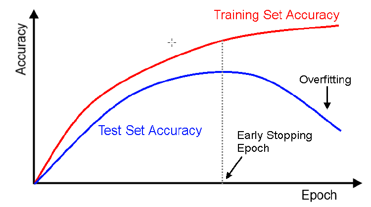
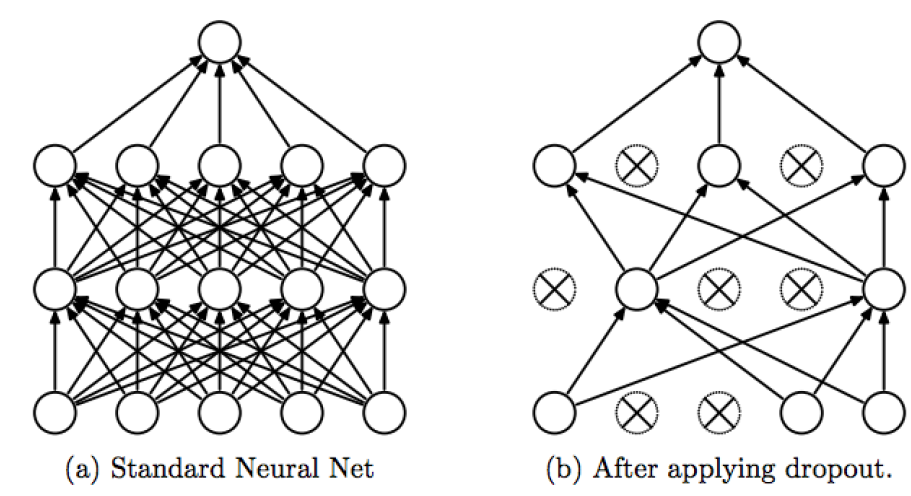
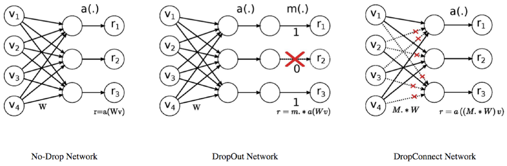
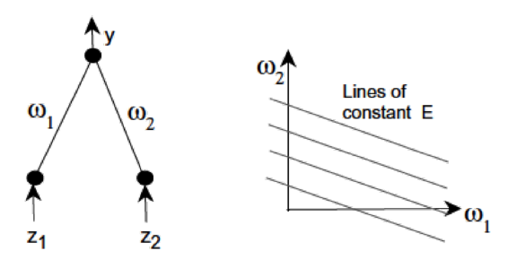
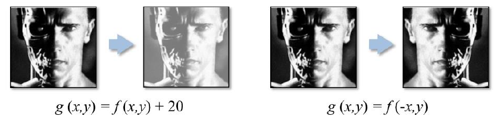
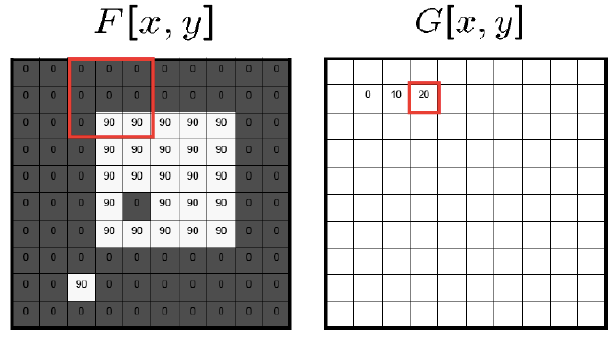
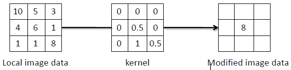

why do we go for first derivative in gradient descent why not second derivative
second derive is called hassian matrix
why not use Hassian instead of jaccobian
because it is expensive to compute, also it was proved that SGD works better than this,
SGD is noisy which is an advantage, and it helps us generalize better. SGD is the true success for generalization of the deep learning
1 Regularization Methods
Difference between Machine Learning and Optimization
Generalization, In general optimization we do not focus on generalization.
In DL we are interested in the data which will come, not in the data which is already there. In DL we are interested in the generalization error
In mainstream optimization, minimizing J is itself the goal; whereas in deep learning, minimizing J so as to minimize a generalizable out-of-sample performance measure is the goal
Empirical Risk Minimization (ERM): \mathbb{E}_{\mathbf{x,y}\approx{\widehat{p}}_{d a t a}(\mathbf{x,y})}(J(\theta;\mathbf{x},y))={\frac{1}{m}}\sum_{i=1}^{m}J(\theta;\mathbf{x}_{i},y_{i})
However, ERM can lead to overfitting. Avoiding overfitting is regularization.
2 Learning and Generalization
- Simple idea to keep monitoring the cost function, and not let it become too consistently low; stop at an earlier iteration

After some time validation loss stops improving and we can do early stopping.
2.1 When to stop
- Train n epochs; lower learning rate; train m epochs : But it’s bad idea, can’t assume one-size-fits-all approach
- Error-change criterion:
- Stop when error isn’t dropping over a window of, say, 10 epochs
- Train for a fixed number of epochs after criterion is reached (possibly with lower learning rate)
- Weight-change criterion:
- Compare weights at epochs t-10 and t and test: \Pi\mathrm{d}\times_{i}\left|\left|W_{i}^{t}\,-\,W_{i}^{t-10}\right|\right|\,<\,\rho
- Don’t base on length of overall weight change vector
- Possibly express as a percentage of the weight
2.2 Weight Decay
- L1 regularization
- L2 regularization
2.3 DropOut
Another standard approach to regularization in ML: Model Averaging
DropOut → a very interesting way to perform model averaging in deep learning.
Training Phase: For each hidden layer, for each training sample, for each iteration, ignore (zero out) a random fraction, p, of nodes (and corresponding activations)
Test Phase: Use all activations, but reduce them by a factor p (to account for the missing activations during training) 
With H hidden units, each of which can be dropped, we have 2^H possible models
Each of the 2^{H−1} models that include hidden unit h must share the same weights for the unit
- serves as a form of regularization
- makes the models cooperate
Including all hidden units at test with a scaling of 0.5 is equivalent to computing the geometric mean of all 2^H models
It’s like ensamble without doing it
Here we are randomly dropping so that no neuron becomes specific to a task, but it learns to do all the task.
DropConnect: An Extension

Using noise is another form of regularization; has shown some impressive results recently. Could be:
Data Noise
- Has been there for a while: add noise to data while training
- Minimization of sum-of-squares error with zero-mean gaussian noise(added to training data) is equivalent to minimization of sum-of-squares error without noise with an added regularized term
- Very similar to data augmentation that we will see later
Label Noise
Gradient Noise
Regularization through Label Noise
- Disturb each training sample with the probability
Regularization through Gradient Noise
Simple idea: add noise to gradient g_{t} \leftarrow g_{t} +\mathcal{N}(0,\sigma_{t}^{2})
Annealed Gaussian noise by decaying the variance \sigma_{t}^{2}\,=\,\frac{\eta}{(1\,+\,t)^{\gamma}}
Showed significant improvement in performance
3 Data Manipulation Methods
3.1 Normalize/standardize the inputs
- Convergence is faster if average input over the training set is close to zero. look at 8Le Cun et al, Efficient Backprop, 1998 and find answer
- Scaled to have the same covariance - speeds learning
- Ideally, value of covariance should be matched with output of activation function (e.g. sigmoid)
- Initially we want to be in lierar reason, we can achieve
- After normalization, if the variance of the data is 2 we want the activation fucntion to have a linear range between 0 and 2
- Ideally, value of covariance should be matched with output of activation function (e.g. sigmoid)
- PCA
- Decorrelate the inputs
- Imagine one input is always twice the other, i.e. z_2 = 2z_1. Output y will be constant on lines w_2 + \frac{1}{2}w_1= const. No use making weight changes on these lines. 
3.2 Batch Normalization
Change in distributions of data inputs is a problem because the model needs to continuously adapt to the new distribution, called covariate shift
This is typically handled using domain adaptation
Even while training minibatch distribution can change
What if this happens in a subnetwork in DL? → called internal covariate shift. How to handle?
Batch nor accelerate training and also regularize the network
BN layer usually inserted before non-linearity layer (after FC or convolutional layer)
Allows higher learning rates.
Reduces the strong dependence on initialization
Acts as a form of regularization too
Take average of last 10 minibatch of gamma and beta and use in inferencing
Algo
- \mu_{B}\leftarrow{\frac{1}{m}}\sum_{i=1}^{m}x_{i}
- \sigma_{B}^{2}\leftarrow\frac{1}{m}\sum_{i=1}^{m}(x_{i}-\mu_{B})^{2}
- \widehat{x}_{i}\leftarrow\frac{x_{i}-\mu_{B}}{\sqrt{\sigma_{B}^{2}+\epsilon}}
- y_{i}\leftarrow\gamma\widehat{\alpha}_{i}\leftarrow\beta\equiv\mathrm{BN}_{\gamma,\beta}(x_{i})
3.3 Shuffling Inputs
- Random sample data and do SGD
- Choose examples with maximum information content
- Shuffle the training set so that successive training examples never (rarely) belong to the same class.
- Present input examples that produce a large error more frequently than examples that produce a small error.
- Helps take large steps in the gradient descent
3.4 Curriculum Learning
- Old idea, proposed by Elman in 1993
- Humans and animals learn much better when examples are not randomly presented but organized in a meaningful order which illustrates gradually more concepts, and gradually more complex ones
- Start small, learn easier aspects of the task or easier sub-tasks, and then gradually increase the difficulty level
- By choosing examples and their order, one can guide training and remarkably increase learning speed
- Introduces the concept of a teacher who:
- has prior knowledge about the training data to decide on a sequence of concepts that can more easily be learned when presented in that order
- monitoring ’learner’s progress to decide when to move on to new material from the curriculum
3.5 Data Augmentation
- Data jittering
- Rotations
- Color changes
- Noise injection
- Mirroring
- Helps increase data; is useful when training data provided is less
- Also acts as a regularizer (by avoiding overfitting to provided data)
- MixUP: if we have data x_1, y_1 and x_2,y_2, we can interpolate between x_1, x_2 and also for y_1,y_2 in this way we can create more data, and also it creates more labes, but that is ok, and it help in the genelarization of the models.
4 Parameter Choices / Initialization method
Activation Functions
Loss Functions : should be differentiable
Learning Rates : adaptive learning rates
All of them decrease it when weight vector “oscillates”, and increase it when the weight vector follows a relatively steady direction
Worthwhile picking a different learning rate for each weight (e.g. based on curvature)
Assuming a binary classification problem, what do you choose the target labels to be? +1 and -1?
What if these are the sigmoid’s asymptotes?
- Weights will be increased continuously to very high values to match the target
- Weights multiplied by small sigmoid derivative → small weight updates → Stuck!
Choose target values at the point of the maximum second derivative on the sigmoid so as to avoid saturating the output units.
Initially we want activation to be in the linear region.
- To be chosen randomly, but in such a way that the activation function is in its linear region
- Both large and small weights can cause very low gradients (in case of sigmoid activation)
- Xavier’s initialization \mathrm{uniform}\left(-{\frac{\sqrt{6}}{\sqrt{\mathrm{fan}_{\mathrm{in}}+\mathrm{fan}_{\mathrm{out}}}}},\;{\frac{\sqrt{6}}{\sqrt{\mathrm{fan}_{\mathrm{in}}+\mathrm{fan}_{\mathrm{out}}}}}\right)
- Caffe implements a simpler version of Xavier’s initialization as: \mathrm{uniform}\left(-{\frac{2}{{\mathrm{fan}_{\mathrm{in}}+\mathrm{fan}_{\mathrm{out}}}}},\;{\frac{2}{{\mathrm{fan}_{\mathrm{in}}+\mathrm{fan}_{\mathrm{out}}}}}\right)
- He’s initialization \mathrm{uniform}\left(-{\frac{4}{{\mathrm{fan}_{\mathrm{in}}+\mathrm{fan}_{\mathrm{out}}}}},\;{\frac{4}{{\mathrm{fan}_{\mathrm{in}}+\mathrm{fan}_{\mathrm{out}}}}}\right)
Proof outline of Xavier’s initialization
We know
Y= w_1x_1+w_2x_2 + \dots + w_nx_n then \begin{align*}
\mathrm{Var}(Y)&=\sum_i\mathrm{Var}(w_ix_i)\\
&=\sum_i \left( \underbrace{\mathbb{E}[x_i]^2\mathrm{Var}(w_i)}_{\;\;0,\text{ Since mean of input is 0}} +\underbrace{ \mathbb{E}[w_i]^2\mathrm{Var}(x_i)}_{\;\;0,\text{ Since weight is normalized to 0}} +\mathrm{Var}(w_i)\mathrm{Var}(x_i) \right) \\
&= \sum_i \mathrm{Var}(w_i)\mathrm{Var}(x_i) \\
&= n\times \mathrm{Var}(w_i)\mathrm{Var}(x_i)
\end{align*}
Now from above equation, if we want \mathrm{Var}(Y) to be equal to \mathrm{Var}(x_i) then \mathrm{Var}(w_i) should be equal to \frac{1}{n}, here n is fan in, similarly we can get something similar when can consider from backprop prospective and we get \frac{1}{n}, here n is fan out, Putting the two together we want \mathrm{Var}(w_i) = \frac{2}{{\mathrm{fan}_{\mathrm{in}}+\mathrm{fan}_{\mathrm{out}}}} Which happens to be Caffe weight initialization method.
Now if we consider uniform distribution to be in range of [-\theta, \theta] then
\mathrm{Var} = \frac{(\theta-(-\theta))^2}{12} = \frac{\theta^2}{3} This is the term which introduces \sqrt{6} in Xavier’s initialization
5 Takeaways
- Some standard choices for training deep networks: SGD + Nesterov momentum, SGD with Adagrad/RMSProp/Adam
- ReLUs, Leaky ReLUs and MaxOut are the best bets for activation functions
- Batch Normalization layers are here to stay (at least, for now)
- DropOut is an excellent regularizer
- Data Augmentation is a must in vision applications
- Weight Initialization is very important while training a new network
6 Computer Vision Basics
- We can think of a (grayscale) image as a function f: \mathcal{R}^2 \rightarrow \mathcal{R} giving the intensity at position (x, y)
- A digital image is a discrete (sampled, quantized) version of this function
- As with any function, we can apply operators to an image

Image Processing Operations
- Point the output value at a specific coordinate is dependent only on the input value at that same coordinate.
- Local the output value at a specific coordinate is dependent on the input values in the neighborhood of that same coordinate.
- Global the output value at a specific coordinate is dependent on all the values in the input image. eg ( fourier, wavelet)
Simple Point Operations: Image Enhancement
- Reversing the contrast new_pixel = max old_pixel + min
- Contrast stretching
Noise Reduction
- Noise Reduction using 2D Moving Average

Linear Filtering
- One simple version: linear filtering
- Replace each pixel by a linear combination (a weighted sum) of its neighbors
- The prescription for the linear combination is called the “kernel” (or “mask”, “filter”)

Linear Filtering: Cross correlation
Say the averaging window size is 2k+1 \times 2k+1:
G[i,j]=\underbrace{\frac{1}{(2k+1)^{2}}}_{\text{Uniform weight to each pixel} } \times \overbrace{ \sum_{u=-k}^{k}\sum_{v=-k}^{k}F[i+u,j+v]}^{\text{loop over all pixels in neighborhood}}
Now generalize to allow different weights depending on neighboring pixel’s relative position: G[i,j]=\sum_{u=-k}^{k}\sum_{v=-k}^{k}\underbrace{H[u,v]}_{\text{Non-uniform weight}} F[i+u,j+v]
This is called cross correlation , denoted by G=H\otimes F
Filtering an image: replace each pixel with a linear combination of its neighbors
Can think of as a “dot product” between local neighborhood and kernel for each pixel
The entries of the weight kernel or “mask” H[u,v] are called filter co-efficients.
7 Linear Filtering: Correlation Example
- Convolution operator G[i,j] =\sum_{u=-k}^{k}\sum_{v=-k}^{k}H[u,v]F[i-u,j-v] and H is then called the impulse response function.
- Equivalent to flip the filter in both dimensions (bottom to top, right to left) and apply cross correlation. G=H*F
\tiny {\textcolor{#808080}{\boxed{\text{Reference: Dr. Vineeth, IIT Hyderabad }}}}